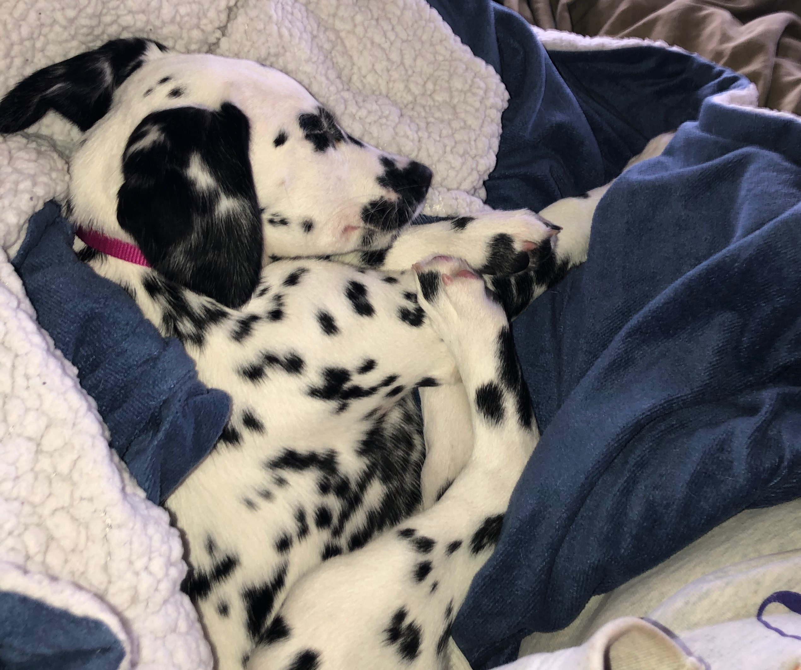

Dalmatians are an abundance of energy, especially when they are puppies. I mean all puppies want to play and go all day, but dalmatians are a very high energy dog. When Ridley was a puppy she very sweet and cute, like most puppies. She definitely started to calm down once she was on a routine.
